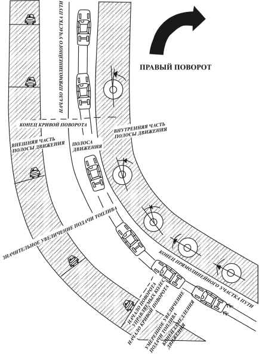
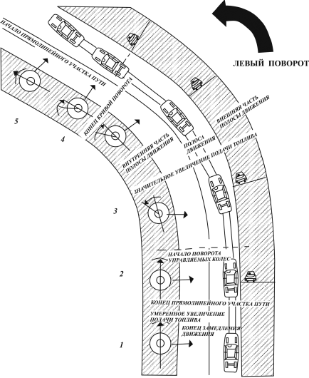
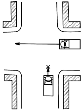
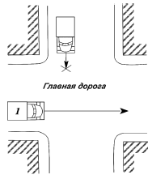
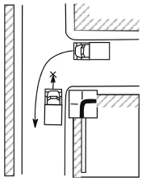

Повороты. Проезд перекрестков.
Для обеспечения требуемой безопасности движения начинающему водителю необходимо усвоить основные приемы выполнения различных поворотов и проезда перекрестков. При повороте в любых условиях требуется повышенная осмотрительность, осторожность и постоянное наблюдение за дорогой в направлении намечаемого движения и сзади с обязательным использованием зеркал заднего вида. Для правильного выполнения поворота следует придерживаться основного правила движения – ехать только по своей стороне проезжей части. Кроме того, следует хорошо знать конструктивные особенности автомобиля, чтобы рассчитать траекторию поворота таким образом, чтобы обеспечить свободное прохождение заднего колеса автомобиля линии закругления.
Все повороты разные, поэтому водителю необходимо уметь определить их кривизну, покрытие дороги, которое на поворотах обычно имеет выбоины, наклон дороги, а главное уметь определить скорость, допустимую на данном вираже. При выполнении поворота на автомобиль действует центробежная сила, которой он сопротивляется сцеплением шин с поверхностью дороги. Если центробежная сила превысит определенную величину при данной максимальной скорости, которую допускает поворот, шины потеряют сцепление с поверхностью шоссе и произойдет занос. Во избежание этого, нужно определять скорость на каждом повороте заранее, нельзя резко увеличивать скорость или тормозить. Проезжая поворот, а также при торможении перед ним, не следует выключать сцепление. Двигатель должен остаться соединенным с ведущими колесами. Чтобы умело выйти из кривой поворота, следует медленно поворачивать рулевое колесо в нужную сторону и плавно нажимать на педаль управления подачей топлива, увеличивая частоту вращения коленчатого вала двигателя.
Техника выполнения поворотов различается углами поворотов, их кривизной. Перед началом правого поворота следует оставаться на правой полосе движения, смещение влево не должно создавать помех другим водителям; при малой скорости движения на повороте следует стремиться двигаться как можно ближе к правому краю проезжей части дороги.
Правый поворот рекомендуется выполнять в следующей последовательности (рис. 16): уменьшить скорость движения автомобиля путем перехода на низшую передачу или притормаживания, одновременно направляя автомобиль по внешней части полосы движения до начала кривой поворота; слегка увеличить подачу топлива, еще находясь на прямолинейном участке пути (при входе в кривую поворота, но до начала поворота рулевого колеса); значительно увеличить подачу топлива и плавно поворачивать рулевое колесо вправо, описывая поворот и не уменьшая подачу топлива, чтобы сохранить сцепление колес с дорогой и частично компенсировать центробежную силу, которая уводит автомобиль к внешней части кривой полосы движения; постепенно поворачивать рулевое колесо, давая возможность автомобилю двигаться к внешней части полосы движения, и резко увеличивать подачу топлива. При повороте направо не наезжайте на бордюр – это грубое нарушение, которое нередко допускают начинающие водители. Чтобы избежать этого, начинайте поворачивать руль примерно в тот момент, когда половина корпуса автомобиля приблизится к бордюру на 0,5–1 м. В начале прямолинейного участка дороги автомобиль занимает прямолинейное положение, быстро и четко выходит из поворота.

Рис. 16. Схема прохождения правого поворота: 1–5 – последовательность выполнения операций водителем
Левый поворот (рис. 17) более сложен, особенно с выездом на главную дорогу, когда нужно пропустить транспортные средства слева и справа. В этом случае нужно заблаговременно перестроиться в первый ряд. Для выполнения левого поворота необходимо уменьшить скорость движения, притормаживая или переходя на низшую передачу, и направить автомобиль до вхождения в кривую поворота с таким расчетом, чтобы начать выполнять поворот по внешней части полосы движения; слегка увеличить подачу топлива при нахождении еще на прямолинейном участке, автомобиль будет входить в кривую поворота до начала поворота рулевого колеса; резко увеличить подачу топлива, плавно повернуть рулевое колесо влево, описывая короткий и замкнутый поворот; не уменьшая подачу топлива, чтобы не потерять контроля за управлением, сохранить сцепление колес с дорогой и компенсировать действие центробежной силы; плавно повернуть рулевое колесо, давая возможность автомобилю двигаться к внешней части полосы движения, и одновременно резко увеличивать подачу топлива. Автомобиль занимает прямолинейное положение, быстро и четко выходит из поворота.

Рис. 17. Схема прохождения левого поворота: 1–5 – последовательность выполнения операций водителем
При повороте направо или налево водитель обязан уступить дорогу пешеходам, переходящим проезжую часть дороги, на которую он поворачивает, а также велосипедистам, пересекающим ее по велосипедной дорожке.
Вы ознакомились, как выполнять повороты, теперь обратим внимание на то, чтобы вовремя и совершенно ясно дать знать о своем намерении повернуть, ибо, когда вы едете следом за другими автомобилями, вам всегда поможет точное знание того, что собирается делать водитель переднего автомобиля. Поэтому старайтесь облегчить ориентировку и водителям, следующим за вами. Дайте знак указателем поворотов заранее и убедитесь, действует ли он. Не забудьте после того, как сделаете поворот, выключить его. Ведь неприятно ехать за автомобилем с включенным указателем и не знать, хочет ли водитель повернуть или просто забыл выключить указатель.
Подъезжая к перекрестку, старайтесь правильно распознать ситуацию тотчас же, как только заметили его. Перекрестки следует проезжать, как всегда, придерживаясь своей половины дороги, вовремя снижая скорость. При подъезде к перекрестку и при въезде на него прежде всего следует посмотреть влево, потому что сначала вы пересекаете путь автомобилей, едущих слева. Если слева опасность не угрожает, посмотрите вправо. Если перекресток свободен или автомобили, движущиеся в поперечном направлении, еще далеко, включите низшую передачу и, быстро прибавив газ, проезжайте перекресток.
Запомните: переезжая перекресток необходимо все время держать правую ногу над тормозной педалью, чтобы в случае необходимости немедленно остановиться.
Все перекрестки делятся на регулируемые сигналами регулировщика или светофора и нерегулируемые, то есть без них. На нерегулируемых перекрестках, а также на перекрестках с неработающим или мигающим желтым светофором нужно руководствоваться знаками приоритета. Нерегулируемые перекрестки делятся на равнозначные и неравнозначные. Равнозначным считается перекресток, на котором пересекаются равнозначные дороги, а неравнозначным– где главная дорога пересекается с второстепенной. Главная дорога – это дорога с любым покрытием по отношению к дороге без покрытия. Главную дорогу обозначают соответствующими дорожными знаками.
Чаще всего на перекрестках дорожно-транспортные происшествия происходят из-за нарушения водителями очередности их проезда, превышения скорости, несоблюдения требований дорожных знаков, сигналов светофоров или регулировщика. Чтобы не нарушать сигналы регулировщика, напоминаем: если регулировщик стоит к вам боком, руки опущены – можно ехать прямо и направо; если стоит левым боком с вытянутой вперед правой рукой – можно ехать в любую сторону; если стоит к вам грудью и вытягивает вперед правую руку – можно повернуть направо. Во всех остальных случаях нужно стоять. Водители и пешеходы всегда должны выполнять сигналы регулировщика, даже если они противоречат сигналам светофора, дорожным знакам и дорожной разметке.
Если водитель проезжает перекресток с поворотом налево или разворотом, следует уступать дорогу автомобилям, движущимся со встречного направления прямо или налево. При повороте направо или налево на перекрестках водитель должен уступать дорогу пешеходам и велосипедистам, переходящим проезжую часть дороги, на которую он поворачивает.
О порядке проезда нерегулируемых перекрестков говорят признаки, дающие одним водителям преимущественное право проезда перед другими. На перекрестке равнозначных дорог при одно-временном приближении к перекрестку 2 и более транспортных средств из пересекаемых направлений преимущественное право проезда имеет водитель, не имеющий помехи справа, и наоборот водитель транспортного средства должен уступить дорогу автомобилям, приближающимся к перекрестку справа (рис. 18).

Рис. 18. Преимущественное право проезда нерегулируемого перекрестка равнозначных дорог предоставляется водителю, не имеющему помехи справа (водителю автомобиля 1)
На перекрестке неравнозначных дорог водитель транспортного средства, движущегося по второстепенной дороге, должен уступить дорогу транспортным средствам, движущимся по главной дороге, независимо от направления их дальнейшего движения (рис. 19).

Рис. 19. Водитель движущийся по второстепенной дороге, уступает дорогу водителю, движущемуся по главной (водителю автомобиля 1)
Перед выездом на нерегулируемый перекресток по второстепенной дороге, пересекающей главную, при наличии дорожного знака «Движение без остановки запрещено» водитель останавливается перед стоп-линией, а если ее нет – перед знаком независимо от наличия транспортных средств на главной дороге. Убедившись в отсутствии таковых, движущихся к перекрестку по главной дороге, водитель продолжает движение. В случаях, когда знаков приоритета на дороге нет, а видимость затруднена, например в метель, темное время суток и т. п., и водитель не может определить значимость дороги, он должен считать, что находится на второстепенной дороге.
Если главная дорога (рис. 20) на нерегулируемом перекрестке меняет направление, то водители, движущиеся по главной дороге, должны руководствоваться между собой правилами проезда перекрестков равнозначных дорог. На рисунке водитель автомобиля 1 может продолжать движение через перекресток в прямом направлении, только пропустив автомобиль 2. Этим же правилом должны руководствоваться между собой и водители транспортных средств, движущихся по второстепенным дорогам.

Рис. 20.
Сигналы светофора или регулировщика определяют порядок проезда регулируемых перекрестков. Въезжая на перекресток, необходимо снизить скорость и при разрешающем сигнале светофора выехать в намеченном направлении независимо от сигналов светофора на выезде. В тех случаях, когда на перекрестке перед светофорами, расположенными на пути следования автомобиля, нанесена стоп-линия или имеется знак «Стоп», водителю следует руководствоваться сигналами каждого светофора. Если на перекрестке движение регулируется светофором с дополнительной секцией, то водитель, находящийся на полосе, с которой производится поворот, должен продолжить движение в направлении, указанном включенной стрелкой, если его остановка создает помеху транспортным средствам, следующим за ним по той же полосе.
Очень внимательным нужно быть водителю при движении на перекрестке в направлении стрелки, включенной в дополнительной секции одновременно с красным или желтым сигналом светофора. В этом случае водитель должен уступить дорогу движущимся с других направлений транспортным средствам. Водитель обязан уступать дорогу при включении разрешающего сигнала светофора также тем транспортным средствам, если они завершают маневр (разворот, поворот) в своем направлении, который они начали на разрешающий сигнал светофора.
Важен вопрос о том, как пропускать «помеху» на перекрестке с плохой видимостью в случае, если вы приближаетесь к равнозначному перекрестку либо двигаетесь по второстепенной дороге, а движение на дороге практически отсутствует. Здесь существует вполне реальный риск, что из-за угла появится автомобиль, который вы обязаны пропустить. В этом случае следует действовать следующим образом: перед перекрестком сбросить скорость примерно до 40 км/ч и переключиться на третью передачу; выжать сцепление и занести правую ногу над педалью тормоза; по мере приближения к перекрестку внимательно посмотреть направо или направо и налево вдоль главной дороги; в случае неожиданного появления помехи нажать на педаль тормоза (останавливаетесь при тормозном пути в 3–4 м); при отсутствии помехи отпустить педаль сцепления и нажать на газ.
В случае появления помехи на перекрестке, тронуться с места, переключиться на вторую передачу и на этой передаче проехать перекресток. Лучше проехать перекресток на невысокой скорости, чем путаться в органах управления в таком опасном месте.
Даже при разрешающем сигнале светофора водителю нельзя въезжать на перекресток, если впереди образовался затор и вынужденная остановка на перекрестке может создать дополнительные трудности для движения. На всех перекрестках вне очереди должны пропускаться автомобили, подающие специальные звуковые и световые сигналы. Любой водитель, услышав или увидев сигнал «скорой медицинской помощи», пожарных, аварийных или других машин, оборудованных специальным сигналом, обязан остановиться или уступить им дорогу.
Запомните! Какой бы ни был перекресток и к какой бы категории водителей вы не относились, не позволяйте себе быть неосторожным. Всегда лучше быть готовым к худшему и не надеяться ни на правило преимущественного проезда по главной дороги, ни на правило правой руки, когда речь идет о перекрестке равнозначных дорог. Осторожность не бывает лишней и на перекрестках с небольшим движением.